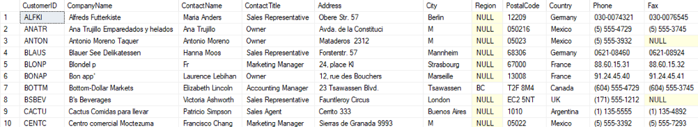

Data query language is, a subset of structured query language used to retreive data from the database for display. DQL statement exclusively use the SELECT command.
SELECT Statement
Data query language is all about retrieving data from a database, it is not bothered with updating or modifying and only makes use of the SELECT statement. Although only the SELECT statement is used result sets can be extensively
modified by combining the select statement with the following clauses:
- SELECT
- FROM
- WHERE
- TOP
- ORDER BY
The use of these clauses to modify result sets will also be demonstrated through example queries that will be run on our demo database.
Make sure that you are logged into SSMS, open a new query window.
Before we run our first select statement, we must tell SSMS that we want to use the NORTHWIND database, therefore we may run:
USE Northwind;
The USE command tells SSMS which database it must use.
Now let’s run our first SELECT statement, in the query window type:
SELECT * FROM Customers;
Now execute the statement you just wrote;
You should see the following in the bottom half of you query window:

If you are not seeing the above result, ask yourself the following question:
For this document, this is the first time you are doing an example by executing SQL. This example is extensive because it is also a test to see if you have setup SSMS correctly and if you have installed the demo database correctly.
This is important because the rest of the procedures in this document assumes that this was done correctly, and if this is not completed you will unfortunately not be able to practically follow along.
The three questions you ask above is for helping you to troubleshoot the problem if you are not getting the correct results or is experiencing an error. Troubleshooting is not in the scope of this document so we encourage you to
use Read, Search, Ask.
The rest of the examples will only show query examples not the expected results, although in some cases the results will be explained.
FROM Clause
The from part of the query tells the SELECT statement which table it needs to retrieve data from, and that is basically all to it. The object stipulated in the from clause will always reference a table name or any other object
that resembles a table. All DQL and DDL statements must use this clause in order to manipulate data stored in the database. The from clause is a mandatory clause.
WHERE Clause
The WHERE clause is not a mandatory clause but is required when a select statement must meet certain criteria. For example, if we only want to see customers from London, we would run this query:
USE Northwind;
SELECT * FROM Customers WHERE City = 'London';
Instead of showing all the customers you will only see the five customers that live in London.
Next run a query to display a list of customers from France.
USE Northwind;
SELECT * FROM Customers WHERE Country = 'France';
This should display eleven records of the customers that live in France.
The WHERE clause filters the data according a criterion. In the above examples the where clause only has 1 criterion, but it is possible to use more than one criterion. But this will be explained the
Logical operators section of this document.
TOP Clause
We know that placing there are eleven customers that live in France, but because we used the TOP clause with a parameter of 10, only ten rows are displayed. The TOP clause will always exclude records according to the default order
of the records, unless the ORDER BY clause is used because it will change the order of the rows no matter what the order (the ORDER BY clause will be explained later in this document), rows that fall beyond the parameter of
TOP clause will not be included in the result set.
Run the following:
USE Northwind;
SELECT TOP 10 * FROM Customers;
The TOP clause is used limit the number of rows that a select query will return.
The query above returns only ten records even though no WHERE clause is included because the TOP clause is limiting it to ten. Even if a where clause is included the query will never return more than 10 records.
Run the following:
USE Northwind;
SELECT TOP 10 * FROM Customers WHERE Country = 'France';
We know that placing there are eleven customers that live in France, but because we used the TOP clause with a parameter of 10, only ten rows are displayed. The TOP clause will always exclude records according to the default order
of the records, unless the ORDER BY clause is used because it will change the order of the rows no matter what the order (the ORDER BY clause will be explained later in this document), rows that fall beyond the parameter of
TOP clause will not be included in the result set.
Run the following:
USE Northwind;
SELECT TOP 10 * FROM Customers WHERE City = 'London';
This query still returns five rows as before even with the TOP 10 clause. This is because as indicated before that the TOP clause limits records and this case does not have to limit the number of rows to ten as there are less than
ten rows returned because there are only five customers that live in London and not more than 10. Considering this query if we for example changed the 10 to a 3 then only three rows would be in the result set.
COLUMNS
The queries demonstrated so far, a star (*) was always placed between the SELECT statement and the FROM clause, this part of a query is generally where you stipulate the columns of a table if you want your result set to only display
specific columns of the table, i.e. you want to exclude some of the columns from your result set. In any query where this is not the case you must use the *, which instructs the query to display "ALL" columns in the table.
To demonstrate this, consider the employees table. This table contains among other things an employee's first name, last name, date of birth, address, city etc. But we want a list that displays only the first name and last name
of the employees.
Run the following:
USE Northwind;
SELECT FirstName, LastName FROM Employees;
The result set will only show two columns that show all the employee's first and last name.
ALIASING
Aliasing in the context of a relational database can have different functions depending on what type of database object the alias is applied to. Aliasing is used when joining
tables, in this context the table names are given a different and often shortened name for simpler referencing regarding the query that is being scripted. Similarly, sub-queries can be aliased when only specific
dataset is required in a query, but it is not necessary to create a new table just for that purpose. But do not worry about these for now, this type of aliasing will be discussed in other sections of this document. In this
section we are going to apply aliasing to columns and also demonstrate why it is useful.
We will start by breaking some rules.
Run the following:
USE Northwind;
SELECT 'this is a string';
You are probably thinking, but the FROM clause is mandatory, how is this not returning an error? That is because the FROM clause is mandatory when referring to an appropriate database object like a table, view or sub-query and
'this is a string' is not a database object. The point is not that we are breaking rules without getting errors, the point is that the column header for the single row which value was 'this is a
string' read (No column name). Now run it again with this modification:
USE Northwind;
SELECT 'this is a string' as StringColumn;
And now the column has a name because we applied an Alias of "StringColumn". Let us move on to a more practical example of column Aliasing. For this query we want the list of employees first and last names again,
but we want to make the column names more readable. Run the following:
USE Northwind;
SELECT firstName as First Name, LastName as Last Name FROM Employees;
If you received and error do not be alarmed as the above erroneous query was quite deliberate. When using an Alias that contains a space, the alias bust be placed inside BRACKETS.
PLEASE NOTE: Correctly speaking, these [ ] are brackets not these ( ), these ( ) are parenthesis and these { } are braces. Know the difference.
Now run the query in the correct format as below:
USE Northwind;
SELECT firstName as [First Name], lastName as [Last Name] FROM Employees;
You can now see that using aliases like this is useful for making column headings more readable, as raw table attribute names are not always desirable. It is also useful when defining VIEWS that will
be discussed later.
Aliasing in the context of column names is probably most useful when creating Computed Columns sometime also referred to as computed fields or derived columns which will be explained in the section Computation and Functions.
ORDER BY Clause
The ORDER BY clause is an optional clause that when used, is almost exclusively always the final clause of a query. This clause is used to sort data in a desired format to make it more readable for display, manual analysis etc.
The ORDER BY clause can be used to order a single or a combination of columns in either ascending or descending direction or a mix of directions for multiple columns. If the order direction is not specified, the
default is direction will always be ascending.
NOTE: all the tables in the Northwind database is by design ordered by their ID columns in ascending order.
Run the following:
USE Northwind;
SELECT firstName as [First Name], lastName as [Last Name] FROM Employees;
If you analyze the results you will note that company name is alphabetically sorted in ascending order and that ID column is not because using the ORDER BY overrides the default order. If you for instance added the ASC keyword
after the column name, ASC being the keyword for sorting in ascending order, the result set will display the same because ascending order when a query includes the ORDER BY clause.
Let's run this query again but reverse the order, which means sort in descending order, to sort in descending order you must explicitly instruct the query to do so by adding the
DESC keyword after the column name:
USE Northwind;
SELECT firstName as [First Name], lastName as [Last Name] FROM Employees;
The result set will now be in the opposite order than the query with no order direction keyword specified.
The next few queries will demonstrate ordering using multiple columns as well as sorting the same result set with a mix-direction-multi-column-sort.
Sorting using more than one column:
USE Northwind;
SELECT ProductName, CategoryID, UnitPrice
FROM products
ORDER BY CategoryID ASC, UnitPrice DESC
The result set of the above displays the CategoryID sorted in ascending and UnitPrice sorted in descending order. The ASC keyword is not required after CategoryID, it was deliberately placed there to demonstrate how
to use multiple columns in the ORDER BY clause while as well as having the columns sorted in opposite directions.
USE command and Semicolons
The USE command is to select database in SQL Server, this is a feature that is unique to MS SQL Server only. We also used it in each of our example scripts, this was to demonstrate that it is good practice when working with MS
SQL Server to always have this at the top of your script, because it will ensure that every time that you run your script it will be run on the correct database. Now that we have made that clear, note that for the rest of the
example scripts in this document this USE database script line will not be included.
You will also note that there are semi-colons at the end of each line, this is to tell the RDBMS that it is the end of the line for a specific operation. This convention is irrelevant in T-SQL and MS SQL Server. But is a requirement
in other RDBMS like MySQL, PostgreSQL and Oracle. This is because in MS SQL server the RDMS can detect the end of a line without the semi-colon.